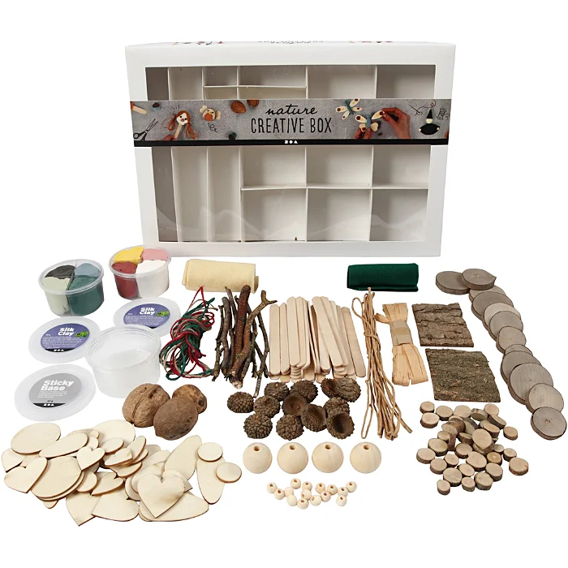

Pottery toolkit
13-packs of different size and shape of ceramic clay tools is enough your needs, perfect for molding clay, cutting, scraping, cleaning, smoothing and so on in the clay crafts producing process.

Paintbrush kit
Perfect for all sorts of detailing. Good for nail art and face painting, work great for painting miniatures, models, figurines, action figures and doll houses, rock painting, paint by Numbers, Army paint.Acrylic, watercolor, or oil which ever project you are creating you will have the right tool for all of your hobbies and crafts.

Decorative box
In the forest, many things have been slightly affected by the wet autumn weather. Fortunately, a box of natural materials and a little more has been collected here, which is perfect for making the finest natural Christmas decorations with.